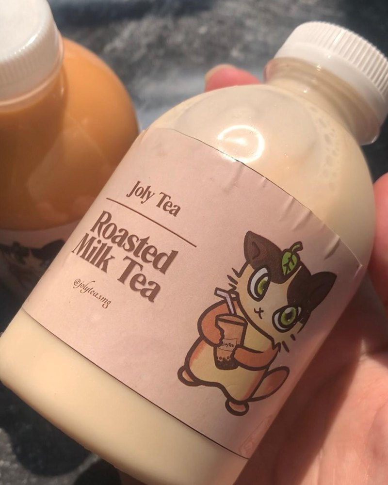
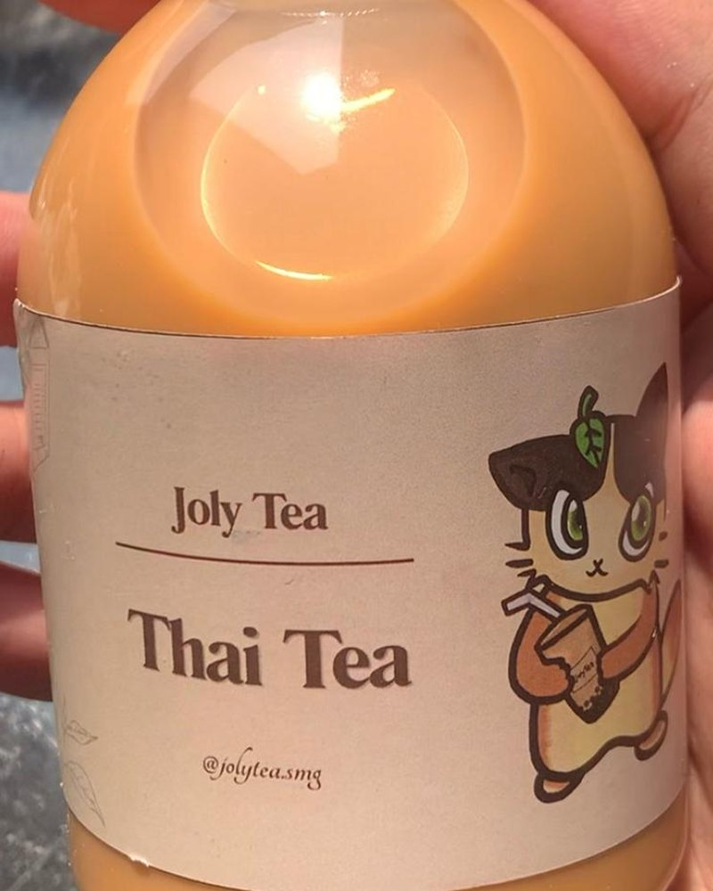

UMKM Milk Tea • Semarang
Seduhan milk tea yang bikin harimu lebih Joly
Joly Tea menghadirkan milk tea dengan cita rasa khas dari Semarang, dari Thai Tea yang manis dan creamy sampai Roasted Milk Tea andalan kami.
2Varian milk tea
Rp10.000Harga mulai dari
SemarangAsal Joly Tea


Menu Favorit
Pilihan milk tea Joly Tea, siap menemani harimu.
Kenapa Joly Tea?
Sederhana: rasa yang konsisten, harga yang bersahabat.
Roasted Milk Tea Khas
Teh sangrai dengan aroma smoky yang berbeda dari milk tea biasa.
Harga Bersahabat
Mulai dari Rp10.000 per unit, cocok untuk dinikmati setiap hari.
Dua Varian Andalan
Thai Tea yang manis dan creamy, atau Roasted Milk Tea yang gurih beraroma sangrai.
Pesan Online Mudah
Pilih menu, masukkan keranjang, dan checkout dalam beberapa langkah.
Tentang Kami
Dari Semarang untuk pecinta teh
Joly Tea adalah bisnis minuman milk tea yang berbasis di Semarang, Jawa Tengah. Kami percaya segelas teh yang enak tidak harus mahal. Cukup racikan yang tepat dan dibuat dengan sepenuh hati.
Kenali Joly Tea